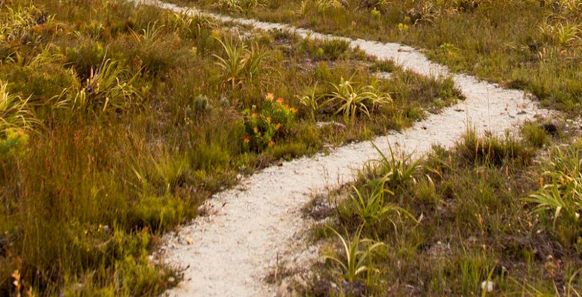

A quiet retreat in the heart of the Fynbos Kingdom
Far removed from the daily grind of life, farm 215 is a private, intimate and secluded retreat where you can enjoy spacious accommodation, tranquility, an overpowering sense of space and the unique nature of the Cape Floral Kingdom, the richest floral biome in the world.
About Us

Rooms
Our accommodation ranges from freestanding suites to rooms at the old homestead. The solar-powered suites have a wooden deck and floor-to-ceiling glass sliding doors to enhance the panoramic views. The spacious rooms at the homestead come with a balcony and en-suite bathroom.
Book a Room
Location
The reserve of farm 215 is accessed from the “fynbos road”, the 100km stretch from Stanford to Cape Agulhas, the southern-most point of the African continent and entrance to the Agulhas National Park.
Contact Us